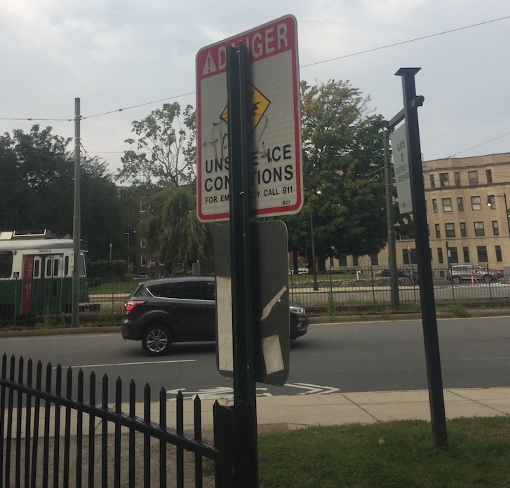
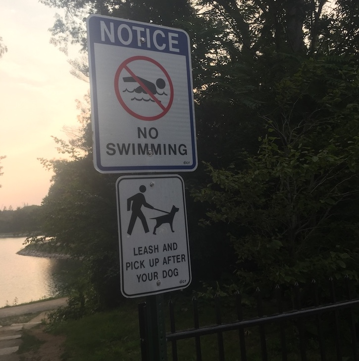

Good Design: Double Sided Park Signs
Aug 27, 2018 · 260 words · 2 minutes read
I often walk my dog around a small reservoir near my apartment. It’s a perfect distance for tiring a small terrier, and it’s a beautiful area.
There are a number of signs around the reservoir that tell you to not swim in the water (as it’s a backup emergency water supply) and to not walk on the ice when it’s frozen over in the winter (as it’s very, very cold if you fall in). These signs are switched for the appropriate season.
On one of my walks, I noticed that one of the signs was partially hidden by its support.

I remembered having seen this sign displayed in the winter, but I didn’t remember the post in front of it. Checking the reverse, I saw that the other side was the summer-time version: “No Swimming.”

If you have two signs, each for roughly half of the year, where do you keep the other sign when it’s not in use? Here is a simple answer: on the back of the other one. Switching the seasonal signs is as easy as removing it, reversing it, and bolting it back on.
Every sign to be swapped can be visited with just a handful of tools. You don’t have to worry about storing, bringing, counting, misplacing, or manufacturing the other signs. It’s the Mass Department of Conservation and Recreation, and they want to save the extra metal!
It’s not the cleanest looking solution, but it is simple and it works. It seems like an obvious choice when you notice it, as good design should.